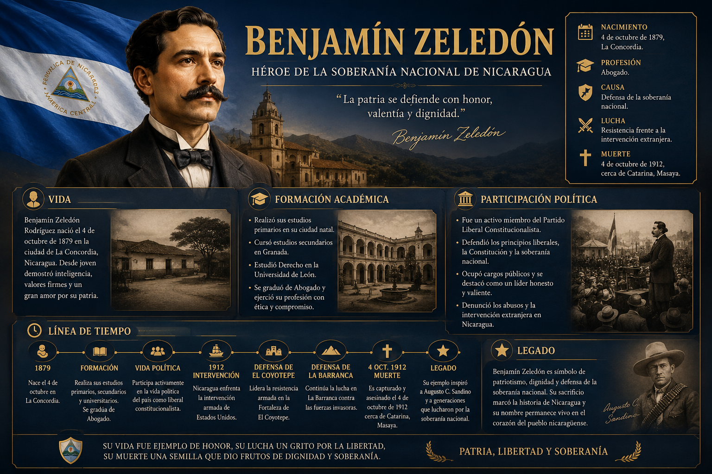
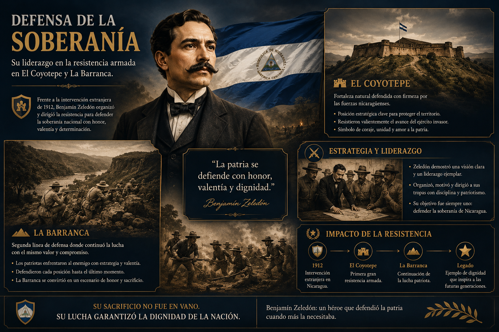
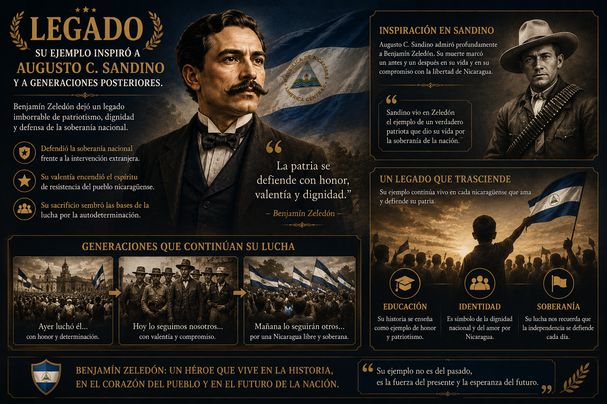

Biografía
Conoce su vida, formación académica y participación política.

Héroe de la soberanía nacional de Nicaragua
Abogado, patriota y líder de la resistencia nicaragüense que defendió con valentía la soberanía nacional frente a la intervención extranjera en 1912.
Conoce su vida, formación académica y participación política.
Su liderazgo en la resistencia armada en El Coyotepe y La Barranca.
Su ejemplo inspiró a Augusto C. Sandino y a generaciones posteriores.
Pon a prueba tus conocimientos con juegos, cuestionarios y actividades interactivas.
Jugar ahoraNace en La Concordia el 4 de octubre.
Realiza estudios y se gradúa de abogado.
Forma parte del movimiento liberal y ocupa cargos públicos.
Intervención estadounidense. Tropas desembarcan en Nicaragua.
Defensa de El Coyotepe. Organiza la resistencia.
Defensa de La Barranca frente a fuerzas extranjeras.
Muerte de Benjamín Zeledón. Es capturado cerca de Catarina, Masaya.
Su ejemplo inspira a Augusto C. Sandino y al pueblo nicaragüense.


